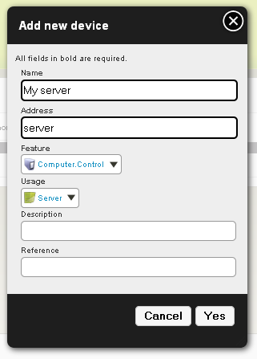

Go this plugin development information
WOL and Ping plugin allows to ping a computer to see if it is alive and to send a broadcast magic packet to a computer when getting an xPL message. This magic packet tells target computer to wake up.
Plugins are installed from the user interface administration. See ((Installing_the_packages|this page)) for more details.
| Key | Default value | Description |
|---|---|---|
| ping-interval | 60 | Define the interval between each ping request for a computer. You shouldn’t use a value under 15 seconds. |
| Key | Default value | Description |
|---|---|---|
| name | Name of the computer. This will be used as address when creating a device : don’t use special characters. | |
| ip | 0.0.0.0 | Ip address (or DNS name) of the computer. |
| mac | ff:ff:ff:ff:ff:ff | Mac address of the computer |
| wol-port | Port used for wake on lan of the computer. The port is a value between 0 and 9. Common used values are 7, 9, 0. |
You can now start the plugin (start button).
In administration, go to Organization > Devices page. Create a new device like this :
| Field | Suggested value | Description |
|---|---|---|
| Name | The name of the computer | |
| Address | The value you set for the name parameter in plugin configuration. | |
| Feature | Computer.control | |
| Usage | Server | A computer related usage |
| Description | a short description (Placement, usage, etc) | |
| Reference | the device reference (model, etc) |
Example :
There are 2 features available :
Attribute the features to a place and you can now wake up your computer or check its state.
Check if your network device allow wakeonlan:
$ sudo ethtool eth0
If you got:
Wake-on: d
The WOL is not activated.
If you got:
Wake-on: g
The WOL is activated.
If it is not activated, you need to enable it. Edit the file /etc/rc.local and add the following line before the line containing exit 0:
ethtool -s eth0 wol g
To get the mac address of the computer, use the following command:
$ ifconfig
eth0 Lien encap:Ethernet HWaddr 00:15:60:B1:xx:xx
[...]
HWaddr is the ac address.